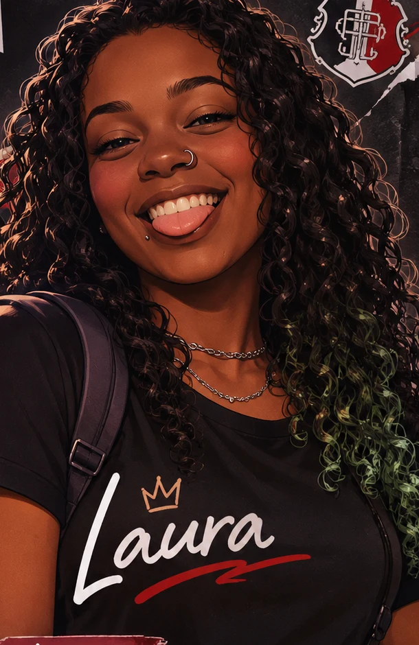

✦ LAURA: ENTRE UNIVERSOS
Capítulo 1 · BTSExplore e encontre pistas

Entre Universos
Uma aventura feita por Ruan para Laura 💜. Agora tu controla a Laura de verdade: anda, encontra pistas, conversa com personagens e atravessa portais!
Use as setas ou WASD; no celular, os botões abaixo. Chegue perto de alguém e toque em Interagir.
🎒 Pistas: 0💜 Amizade: 0🌌 1 / 6 universos
Como jogar
Explore o cenário livremente. Os personagens com ! têm conversas ou missões; os itens com ✦ podem ser coletados. O portal só abre depois de cumprir a missão do lugar. As escolhas mudam o desfecho.
O jogo salva automaticamente no navegador. É uma versão jogável 2D com seis mapas, não apenas páginas de texto.